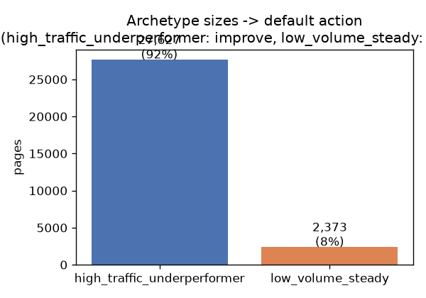

Which content pages are worth reviewing first?
A transparent rule vs. a cluster model, on 30,000 anonymized content-performance records · FlyRank ML Internship capstone
Abstract
FlyRank's content teams manage refresh decisions across dozens of clients with limited
reviewer time per cycle, and can't manually look at every page every cycle — so the
question is which pages to look at first. This paper compares two ways of answering that: a transparent rule
(stale_ctr_gap — a page that's old, visible, ranked, and underperforming
its own position tier's click-through rate) against a K-Means clustering model trained on
62 engineered features from the same data. On a held-out test set, the cluster-based ranking
measured higher precision than the rule baseline at every cutoff checked, under both a random
split and a split grouped by client — a directional signal, not a settled result, since
the gap and the underlying base rate both shifted between the two splits. The practical output
is a ranked review queue and an archetype-to-action mapping, built for a human reviewer to
triage from, not to act on unsupervised.
Introduction
This is a case study built directly on that FlyRank problem: a content team lead or SEO reviewer works a fixed review budget — a handful of pages per cycle, not the whole library. Reviewing a page that didn't need it costs an hour; missing one that did keep losing clicks while nobody looked at it. Neither error is catastrophic on its own, which is why this is framed as a ranking problem: point reviewers at the right end of the queue, not a single automated verdict.
The approach here is Lane 3 of the internship's task menu: structured content archetype clustering — group pages by shared traits, name the groups, and map each group to a default action. That's a deliberately narrower goal than trying to read what a page is about; the groups are behavioral (traffic, position, freshness), not topical.
Data
Two releases were touched, for different reasons. An early data-contract check queried the
FlyRank warehouse release (build v20260703) to verify grain and missingness claims at real
scale: fact_content_daily_performance for March 2026 had 9,841,378 daily rows, and
filtering to confirmed Search Console availability dropped 63.3% of them, leaving 3,611,061
usable rows before aggregation — a limitation worth stating up front, since any features
built from that slice would represent roughly 37% of content-days, not the full inventory.
The modeling work in this paper instead uses the small starter dataset shipped with the internship: 30,000 rows, one row per pseudonymized content item across 32 clients, trailing 90-day metrics. It's smaller but complete for its window, with no availability filtering to explain away, and large enough to fit and evaluate a K-Means model honestly.
trend_direction and trend_pct never enter any feature list —
the decline label is derived from them, so using them as inputs would be leakage.
content_id and client_id are pseudonyms, used only for grouping and
the honest split described below, never as model features. No client name, raw query, or URL
appears anywhere in this project.
Methodology
Baseline. A transparent rule, not a model: flag a page if it's visible (500+ impressions in 90 days), sitting on page 1 or better, hasn't been touched in 90+ days, and its click-through rate trails the median other pages get at the same position tier. Two assumptions were checked against the data before trusting the rule: click-through rate drops with worse position (confirmed: page-1 median 0.24% → striking 0.17% → page 3–5 0.09% → deep 0.00%), and staleness tracks with worse position (confirmed: median position 10.6 at 0–30 days since update → 18.6 at 181+ days).
Model. K-Means clustering on 21 numeric and 8 one-hot categorical features (impressions, clicks, sessions, engagement, position, freshness, content metadata), standardized before fitting. The decline label is used only to score and name clusters after fitting, never as a clustering input. Silhouette score picked k=2 by a wide margin (0.338 vs. roughly 0.17 for every k from 3 to 8 tried) — a coarser split than the "content archetypes" framing implies going in: large pages that are struggling vs. small pages that are fine.
Validation. Two splits were run and compared on purpose. A plain random 80/20 split served as the naive comparison; a second run used a client-grouped split (holding out roughly 6 of 32 clients entirely), since a random split lets every client appear on both sides and can fake skill the model doesn't have. The full attack checklist for label leakage passed: no label-derived or sibling columns in the feature lists, no product-flag columns (none shipped in this dataset), the split grouped by the repeating entity, and the base rate reported next to every metric. A deliberate leakage-injection test (adding the label-source column into the clustering pipeline) came back unchanged — not because the test harness was broken, but because K-Means dilutes one column's signal across 62 scaled dimensions the way a supervised model would not, confirmed by an isolated check that scoring by that column alone gets near-perfect precision.
Results
| Split | k | Baseline precision | Model precision | Base rate |
|---|---|---|---|---|
| Random 80/20 | 25 | 0.48 | 0.52 | 0.545 |
| Random 80/20 | 50 | 0.56 | 0.64 | 0.545 |
| Random 80/20 | 100 | 0.59 | 0.60 | 0.545 |
| Grouped by client | 25 | 0.40 | 0.72 | 0.511 |
| Grouped by client | 50 | 0.50 | 0.70 | 0.511 |
| Grouped by client | 100 | 0.50 | 0.64 | 0.511 |
The cluster-based ranking measures higher than the rule baseline at every k, on both splits. Three things temper that headline:
- Every client appears on both sides of the random split, so that "model" number may partly reflect memorizing client-level patterns rather than generalizing to an unseen client.
- The grouped split is a single
GroupShuffleSplitholding out a handful of clients — small enough that which clients land in the test set can move the numbers on its own, and the base rate shifted too, so the two columns aren't measuring quite the same population. Repeated grouped splits, not one, would be needed to call this settled. - At k=25 on the random split, model precision (0.52) sits below the base rate (0.545) — worse than guessing at that cutoff. The larger cluster ties 22,079 pages to one identical score, so a small top-k draw from it is close to random.
Read together: this is a real, repeated, directional signal that the cluster-based ranking may outperform the rule baseline — not a settled result ready to replace the baseline in production.

Limitations & honest framing
- No causal claim: this is cross-sectional data, one trailing 90-day snapshot. Nothing here shows that refreshing a page causes it to stop declining, only that certain pages look worth reviewing given how they compare to their peers right now.
- Client concentration in the baseline queue: 8 of the top 10 rows by baseline score belonged to a single client sharing the exact same "last updated" date — one batch content-update event, not eight independent problems.
- The model's advantage over the baseline is directional, not settled, for the reasons in the results section above.
- Coarse clustering: the two groups found are closer to "big pages, struggling" vs. "small pages, fine" than a rich taxonomy of content types.
- Scoring by cluster average loses per-page information — every page in a cluster gets the identical score, so the three worst individual misses were all pages that looked fine on their own (two sat in the top 3 search positions) but inherited their cluster's high-decline-rate score.
- Single vendor, single 90-day window, 32 clients: findings may not generalize to a different time period, industry mix, or client base.
Ranked recommendations
- Rank pages with a positive baseline score (stale, visible, ranked, underperforming their own tier's click-through rate) to the top of the review queue; give every other page a default action from its cluster archetype.
- Archetype-to-action mapping:
high_traffic_underperformer(bigger audience, worse position and click-through rate, higher observed decline rate) → improve;low_volume_steady(smaller audience, better position, higher click-through rate, lower decline rate) → monitor. - Require human review before acting on any flagged page: check for tracking artifacts (near-zero click-through rate on high impressions), one-client batch events, brand or navigational query intent, and competing search-result features — all of which can produce the same score without a real content problem behind it.
- Never automate: publishing a rewrite, deprioritizing a zero-score page, or presenting the archetype label as a client-facing health verdict.
- Re-run on the normal reporting cadence; investigate if the flagged count or base rate swings sharply between runs, or when a new client is onboarded whose pages may not fit either archetype.
Reproducibility
Everything here can be re-run from a fresh clone of the project repository, in order:
work/notebooks/w04_baseline_score.ipynb (baseline),
w05_model.ipynb (model, random split),
w06_validation_audit.ipynb (grouped split, leakage audit, claim rewrite),
w07_action_playbook.ipynb (ranked queue export), and
capstone.ipynb (this paper's source, mirrored). Random seed 42 throughout.
The exact source repository, with every notebook, is linked below.
Closing note
This project stays narrow on purpose: one piece of FlyRank's content-review problem, not all of it. Given a snapshot of performance data, which pages should a reviewer open first, and can an unsupervised grouping point at the same pages a simple rule already does — cheaply enough to run every cycle, and honestly enough to trust the difference it finds.